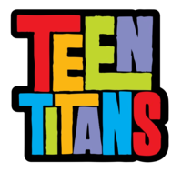
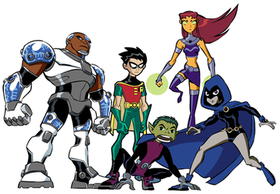

Teen Titans
(TV series)
Published by Mysterious person - Febuary 2nd
Teen Titans is an American animated superhero television series created by Glen Murakami and developed by Murakami, David Slack and Sam Register. Based on DC Comics's superhero team of the same name it was produced by Warner Bros. Animation, and DC Entertainment (for season 5). The show premiered on Cartoon Network on July 19, 2003; its first two seasons also aired on Kids' WB. Initially, only four seasons were planned, but the popularity of the series led to Cartoon Network's ordering a fifth season. The final half-hour episode of the show, "Things Change", aired on January 16, 2006; it was later followed by a TV movie, Teen Titans: Trouble in Tokyo, that premiered on September 15 the same year, serving as the series finale. A 15-minute episode titled "The Lost Episode" was released as part of an online promotional campaign by Post Consumer Brands in January 2005.
Teen Titans became one of Cartoon Network's most popular series, renowned for its humor, storylines, and banter between the main characters. During its run, the series was nominated for three Annie Awards and one Motion Picture Sound Editors Award. Spin-off media included comics, DVD releases, video games, music albums, and collectible toys. In 2013, the show spawned a spin-off, titled Teen Titans Go!, which received a theatrical film that was released on July 27, 2018, titled Teen Titans Go! To the Movies. In 2019, a crossover film with Teen Titans Go! was released, titled Teen Titans Go! vs. Teen Titans. It features the first appearance of the original series characters after 13 years.
The series was first shown on Boomerang from February 2, 2009 replacing the Super Friends until October 31, 2010. It returned to Boomerang's line-up on October 3, 2011, and left the schedule again on June 1, 2014.
Premise
Teen Titans is based primarily on stories by Marv Wolfman and George Pérez from the 1980s, featuring characters, storylines, and concepts introduced during the run, and incorporating a similar group of members. The five main members of the eponymous team in the series are Robin (Scott Menville), the intelligent and capable leader of the Teen Titans; Starfire (Hynden Walch), a quirky, curious alien princess from the planet Tamaran; Cyborg (Khary Payton), a half-human/half-robot cyborg who is known for his strength and technological prowess; Raven (Tara Strong), a stoic girl from the parallel world Azarath who draws upon dark energy and psionic abilities; and Beast Boy (Greg Cipes), a good- natured joker who can transform into various animals. They are situated in Titans Tower, a large T-shaped building featuring living quarters, a command center, and a variety of training facilities on an island just offshore from the West Coast metropolis of Jump City. The team deals with all manner of criminal activity and threats to the city, while dealing with their own struggles with adolescence, their mutual friendships, and their limitations.
The first season focuses on the Teen Titans' introduction to the mysterious supervillain Slade (Ron Perlman), who seeks to turn Robin into his apprentice. The second season is an adaptation of "The Judas Contract" storyline where new hero Terra (Ashley Johnson) joins the team while secretly plotting against them with Slade. The third season depicts Cyborg's conflict with the evil organization H.I.V.E. and their leader Brother Blood (John DiMaggio), prompting Cyborg to form the superhero team Titans East with Aqualad (Wil Wheaton), Speedy (Mike Erwin), Bumblebee (T'Keyah Crystal Keymáh), and Más y Menos (Freddy Rodriguez). In the fourth season, Raven finds herself unwillingly involved in a plot that threatens the existence of the world when her demon father Trigon (Kevin Michael Richardson) seeks to enslave the Earth. For the fifth season, the Teen Titans join forces with numerous other heroes to combat the Brotherhood of Evil, Beast Boy's longtime adversaries, and their army of villains.
Episodes
Main article: List of Teen Titans episodes
Each season contains a distinct story arc that is centered on a specific Titan on the team. Starfire is the only individual member who was part of the original roster to not have a season focused on her.
